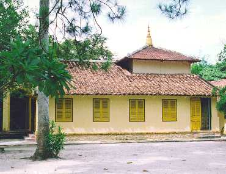
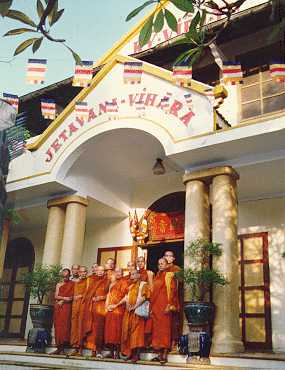
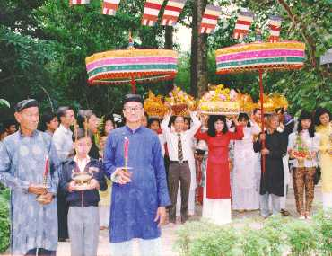

BuddhaSasana Home Page
English Section
Theravada Buddhism in Vietnam
Binh Anson
Buddhism came to Vietnam in the first century CE [1]. By the end of the second century, Vietnam developed a major Buddhist centre in the region, commonly known as the Luy-Lau centre, now in the Bac-Ninh province, north of the present Hanoi city. Luy-Lau was the capital of Giao-Chi, former name of Vietnam, and was a popular place visited by many Indian Buddhist missionary monks on their way to China, following the sea route from the Indian sub-continent by Indian traders. A number of Mahayana sutras and the Agamas were translated into Chinese scripts at that centre, including the sutra of Forty Two Chapters, the Anapanasati, the Vessantara-jataka, the Milinda-panha, etc.
In the next 18 centuries, due to geographical proximity with China and despite being annexed twice by the
Chinese, the two countries shared many common features of cultural, philosophical and religious heritage. Vietnamese Buddhism has been greatly influenced by the development of Mahayana Buddhism in China, with the dominant traditions of Ch'an/Zen, Pure Land, and Tantra.The southern part of the present Vietnam was originally occupied by the Champa (Cham) and the Cambodian (Khmer) people who followed both a syncretic Saiva-Mahayana Buddhism and Theravada Buddhism [2], although Champa probably had a Theravada presence from as early as the 3rd century CE, whilst Cambodia received the Theravada as late as the 12th century. The Vietnamese started to conquer and absorbed the land in the 15th century, and the current shape of the country was finalised in the 18th century. From that time onward, the dominant Viet followed the Mahayana tradition whilst the ethnic Cambodian practiced the Theravada tradition, and both traditions peacefully co-existed.
In the 1920s and 1930s, there were a number of movements in Vietnam for the revival and modernisation of Buddhist activities. Together with the re-organisation of Mahayana establishments, there developed a growing interest in Theravadin meditation and also in Buddhist materials based on the Pali Canon. These were then available in French. Among the pioneers who brought Theravada Buddhism to the ethnic Viet was a young veterinary doctor named Le Van Giang. He was born in the South, received higher education in Hanoi, and after graduation, was sent to Phnom Penh, Cambodia, to work for the French government [3].
During that time, he developed a growing interest in Buddhism. He started to study and practice the Pure Land and Tantric ways but was not satisfied. By chance, he met the Vice Sangharaja of the Cambodian Sangha and was recommended a book on the Noble Eightfold Path written in French. He was struck by the clear message in the book, and decided to try out the Theravada way. He learnt meditation on the breath (Anapanasati) from a Cambodian monk at the Unalom Temple in Phnom Penh and achieved deep samadhi states. He continued the practice and after a few years, he decided to ordain and took the Dhamma name of Ho-Tong (Vansarakkhita).

Buu-Quang TempleIn 1940, upon an invitation by a group of lay Buddhists led by Mr Nguyen Van Hieu, a close friend, he went back to Vietnam and helped to establish the first Theravada temple for Vietnamese Buddhists, at Go Dua, Thu Duc (now a district of Saigon). The temple was named Buu-Quang (Ratana Ramsyarama). Later, the Cambodian Sangharaja, Venerable Chuon Nath, together with 30 Cambodian bhikkhus established the Sima boundary at this temple [4]. The temple was destroyed by French troops in 1947, and was rebuilt in 1951. Here at Buu-Quang temple, together with a group of Vietnamese bhikkhus, who had received training in Cambodia, such as Venerables Thien-Luat, Buu-Chon, Kim-Quang, Gioi-Nghiem, Tinh-Su, Toi-Thang, Giac-Quang, An-Lam, Venerable Ho-Tong started teaching the Buddha Dhamma in Vietnamese language. He also translated many Buddhist materials from the Pali Canon, and Theravada became part of Vietnamese Buddhist activity in the country.
In 1949-1950, Venerable Ho-Tong together with Mr Nguyen Van Hieu and supporters built a new temple in Saigon, named Ky-Vien Tu (Jetavana Vihara). This temple became the centre of Theravada activities in Vietnam, which continued to attract increasing interest among the Vietnamese Buddhists. In 1957, the Vietnamese Theravada Buddhist Sangha Congregation (Giao Hoi Tang Gia Nguyen Thuy Viet Nam) was formally established and recognised by the government, and the Theravada Sangha elected Venerable Ho-Tong as its first President, or Sangharaja. 
Ky-Vien TempleDuring that time, Dhamma activities were further strengthened by the presence of Venerable Narada from Sri Lanka. Venerable Narada had first came to Vietnam in the 1930s and brought with him Bodhi tree saplings which he planted in many places throughout the country. During his subsequent visits in the 1950s and 1960s, he attracted a large number of Buddhists to the Theravada tradition, one of whom was the popular translator, Mr Pham Kim Khanh who took the Dhamma name of Sunanda. Mr Khanh translated many books of Venerable Narada, including The Buddha and His Teachings, Buddhism in a Nutshell, Satipatthana Sutta, The Dhammapada, A Manual of Abhidhamma, etc [5]. Mr Khanh, now in his 80s, lives in the USA and is still active in translating Dhamma books of well-known meditation teachers from Thailand, Burma and Sri Lanka.

Kathina CeremonyFrom Saigon, the Theravada movement spread to other provinces, and soon, a number of Theravada temples for ethnic Viet Buddhists were established in many areas in the South and Central parts of Vietnam. As at 1997, there were 64 Theravada temples throughout the country, of which 19 were located in Saigon and its viccinity [6]. Beside Buu-Quang and Ky-Vien temples, other well known temples are Buu-Long, Giac-Quang, Tam-Bao (Da-Nang), Thien-Lam and Huyen-Khong (Hue), and the large Sakyamuni Buddha Monument (Thich-Ca Phat Dai) in Vung Tau. In the 1960s and 1970s, a number of Vietnamese bhikkhus were sent overseas for further training, mostly in Thailand and some in Sri Lanka and India. Recently, this programme has been resumed and about 20 bhikkhus and nuns are receiving training in Burma.
Historically, there has been a close relationship between the Cambodian and the Vietnamese bhikkhus. In fact, in 1979, after the Khmer Rouge were driven out of Phnom Penh, a group of Vietnamese bhikkhus led by Venerables Buu-Chon and Gioi-Nghiem came to that city to re-ordain 7 Cambodian monks, and thus re-established the Cambodian Sangha which had been destroyed by the Khmer Rouge when they were in control [7].
Dhamma literature in the Vietnamese language comes from two main sources: the Pali Canon and the Chinese Agamas, together with a large collection of Mahayana texts. Since 1980s, there has been an ongoing programme to publish these materials by scholar monks of both Mahayana and Theravada traditions. So far, 27 volumes of the first 4 Nikayas, translated by Venerable Minh-Chau, and the 4 Agamas, translated by Venerables Tri-Tinh, Thien-Sieu and Thanh-Tu, have been produced. Work is under way to translate and publish the 5th Nikaya. In addition, a complete set of the Abhidhamma, translated by Venerable Tinh-Su, has been printed, together with the Dhammapada, the Milinda-Panha, the Visudhi-Magga, the Abhidhammatthasangaha and many other work.
In summary, although Buddhism in Vietnam is predominantly of the Mahayana form, the Theravada tradition is well recognised and is experiencing a growing interest especially in the practice of meditation, in Nikaya-Agama literature and in Abhidhamma studies.
Binh Anson,
Perth, Western Australia
08 June 1999References
[1] Nguyen Lang, 1973. Viet Nam Phat Giao Su Luan, vol 1 (History of Buddhism in Vietnam)
[2] Andrew Skilton, 1994. A Concise History of Buddhism
[3] Le Minh Qui, 1981. Hoa Thuong Ho-Tong (Biography of Maha Thera Ho-Tong)
[4] Nguyen Van Hieu, 1971. Cong Tac Xay Dung Phat Giao Nguyen Thuy tai Viet Nam (On The Work of Establishing Theravada Buddhism in Vietnam)
[5] Pham Kim Khanh, 1991. Narada Maha Thera
[6] Giac-Ngo Weekly, no. 63, 14-06-1997
[7] Thich Dong Bon, 1996. Tieu Su Danh Tang Viet Nam (Biography of Famous Vietnamese Monks)-oOo-